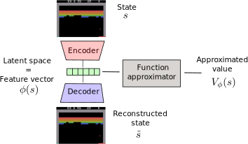
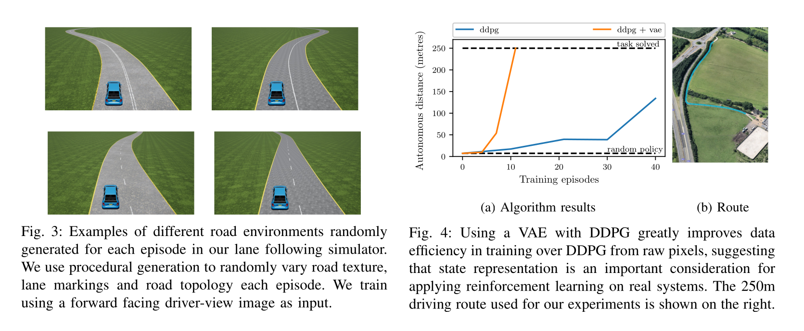
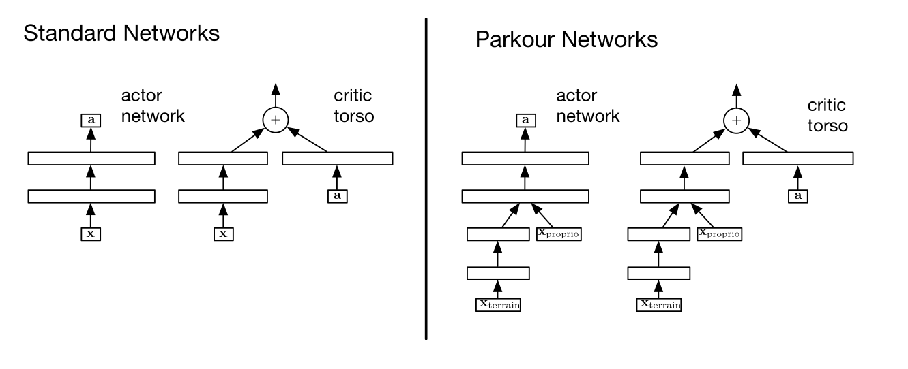

As always, you do not know the true Q-value Q^{\mu_\theta}(s, a), because you search for the policy \mu_\theta.
Silver et al. (2014) showed that you can safely (without introducing any bias) replace the true Q-value with an estimate Q_\varphi(s, a), as long as the estimate minimizes the mse with the TD target:
If you act off-policy, i.e. you visit the states s using a behavior policyb, you would theoretically need to correct the policy gradient with importance sampling:
But your policy is now deterministic: the actor only takes the action a=\mu_\theta(s) with probability 1, not \pi(s, a).
The importance weight is 1 for that action, 0 for the other. You can safely sample states from a behavior policy, it won’t affect the deterministic policy gradient:
As DPG is off-policy, an experience replay memory can be used to sample experiences.
The actor\mu_\theta learns using sampled transitions with DPG.
The criticQ_\varphi uses Q-learning on sampled transitions: target networks can be used to cope with the non-stationarity of the Bellman targets.
Contrary to DQN, the target networks are not updated every once in a while, but slowly integrate the trained networks after each update (moving average of the weights):
Another approach to ensure exploration is to add noise to the parameters\theta of the actor at inference time.
For the same input s_t, the output \mu_\theta(s_t) will be different every time.
The NoisyNet approach can be applied to any deep RL algorithm to enable a smart state-dependent exploration (e.g. Noisy DQN).
DDPG: Deep Deterministic Policy Gradient
Initialize actor network \mu_{\theta} and critic Q_\varphi, target networks \mu_{\theta'} and Q_{\varphi'}, ERM \mathcal{D} of maximal size N, random process \xi.
for t \in [0, T_\text{max}]:
Select the action a_t = \mu_\theta(s_t) + \xi and store (s_t, a_t, r_{t+1}, s_{t+1}) in the ERM.
For each transition (s_k, a_k, r_k, s'_k) in a minibatch of K transitions randomly sampled from \mathcal{D}:
Compute the target value using target networks t_k = r_k + \gamma \, Q_{\varphi'}(s'_k, \mu_{\theta'}(s'_k)).
Update the critic by minimizing: \mathcal{L}(\varphi) = \frac{1}{K} \sum_k (t_k - Q_\varphi(s_k, a_k))^2
Update the actor by applying the deterministic policy gradient: \nabla_\theta \mathcal{J}(\theta) = \frac{1}{K} \sum_k \nabla_\theta \mu_\theta(s_k) \times \nabla_a Q_\varphi(s_k, a) |_{a = \mu_\theta(s_k)}
DDPG allows to learn continuous policies: there can be one tanh output neuron per joint in a robot.
The learned policy is deterministic: this simplifies learning as we do not need to integrate over the action space after sampling.
Exploratory noise (e.g. Ohrstein-Uhlenbeck) has to be added to the selected action during learning in order to ensure exploration.
Allows to use an experience replay memory, reusing past samples (better sample complexity than A3C).
DDPG: continuous control
3 - DDPG: learning to drive in a day
DDPG: learning to drive in a day
DDPG: learning to drive in a day
The algorithm is DDPG with prioritized experience replay.
Training is live, with an on-board NVIDIA Drive PX2 GPU.
A simulated environment is first used to find the hyperparameters.
Autoencoders in deep RL
A variational autoencoder (VAE) is optionally use to pretrain the convolutional layers on random episodes.

DDPG: learning to drive in a day

Skipped
4 - TD3 - Twin Delayed Deep Deterministic policy gradient
TD3 - Twin Delayed Deep Deterministic policy gradient
As any Q-learning-based method, DDPG overestimates Q-values.
The Bellman target t = r + \gamma \, \max_{a'} Q(s', a') uses a maximum over other values, so it is increasingly overestimated during learning.
After a while, the overestimated Q-values disrupt training in the actor.
Double Q-learning solves the problem by using the target network \theta' to estimate Q-values, but the value network \theta to select the greedy action in the next state:
The idea is to use two different independent networks to reduce overestimation.
This does not work well with DDPG, as the Bellman target t = r + \gamma \, Q_{\varphi'}(s', \mu_{\theta'}(s')) uses a target actor network that is not very different from the trained deterministic actor.
TD3 - Twin Delayed Deep Deterministic policy gradient
TD3 uses two critics \varphi_1 and \varphi_2 (and target critics):
the Q-value used to train the actor will be the lesser of two evils, i.e. the minimum Q-value:
t = r + \gamma \, \min(Q_{\varphi'_1}(s', \mu_{\theta'}(s')), Q_{\varphi'_2}(s', \mu_{\theta'}(s')))
One of the critic will always be less over-estimating than the other. Better than nothing…
Using twin critics is called clipped double learning.
TD3 - Twin Delayed Deep Deterministic policy gradient
Another issue with actor-critic architecture in general is that the critic is always biased during training, what can impact the actor and ultimately collapse the policy:
The critic should learn much faster than the actor in order to provide unbiased gradients.
Increasing the learning rate in the critic creates instability, reducing the learning rate in the actor slows down learning.
The solution proposed by TD3 is to delay the update of the actor, i.e. update it only every d minibatches:
Train the critics \varphi_1 and \varphi_2 on the minibatch.
everyd steps:
Train the actor \theta on the minibatch.
This leaves enough time to the critics to improve their prediction and provides less biased gradients to the actor.
TD3 - Twin Delayed Deep Deterministic policy gradient
A last problem with deterministic policies is that they tend to always select the same actions \mu_\theta(s) (overfitting).
For exploration, some additive noise is added to the selected action:
a = \mu_\theta(s) + \xi
But this is not true for the Bellman targets, which use the deterministic action:
t = r + \gamma \, Q_{\varphi}(s', \mu_{\theta}(s'))
TD3 proposes to also use additive noise in the Bellman targets:
t = r + \gamma \, Q_{\varphi}(s', \mu_{\theta}(s') + \xi)
If the additive noise is zero on average, the Bellman targets will be correct on average (unbiased) but will prevent overfitting of particular actions.
The additive noise does not have to be an Ornstein-Uhlenbeck stochastic process, but could simply be a random variable:
\xi \sim \mathcal{N}(0, 1)
Initialize actor \mu_{\theta}, critics Q_{\varphi_1}, Q_{\varphi_2}, target networks \mu_{\theta'}, Q_{\varphi_1'},Q_{\varphi_2'}, ERM \mathcal{D}, random processes \xi_1, \xi_2.
for t \in [0, T_\text{max}]:
Select the action a_t = \mu_\theta(s_t) + \xi_1 and store (s_t, a_t, r_{t+1}, s_{t+1}) in the ERM.
For each transition (s_k, a_k, r_k, s'_k) in a minibatch sampled from \mathcal{D}:
Update the actor by applying the DPG using Q_{\varphi_1}: \nabla_\theta \mathcal{J}(\theta) = \frac{1}{K} \sum_k \nabla_\theta \mu_\theta(s_k) \times \nabla_a Q_{\varphi_1}(s_k, a) |_{a = \mu_\theta(s_k)}
Distributional critic: The critic does not predict single Q-values Q_\varphi(s, a), but the distribution of returns \mathcal{Z}_\varphi(s, a) (as in Categorical DQN): \mathcal{L}(\varphi) = \mathbb{E}_{s \in \rho_b} [ \text{KL}(\mathcal{T} \, \mathcal{Z}_\varphi(s, a) || \mathcal{Z}_\varphi(s, a))]
For Parkour tasks, the states cover two different informations: the terrain (distance to obstacles, etc.) and the proprioception (joint positions of the agent).
They enter the actor and critic networks at different locations.

References
Barth-Maron, G., Hoffman, M. W., Budden, D., Dabney, W., Horgan, D., TB, D., et al. (2018). Distributed Distributional Deterministic Policy Gradients. http://arxiv.org/abs/1804.08617.
Fujimoto, S., van Hoof, H., and Meger, D. (2018). Addressing Function Approximation Error in Actor-Critic Methods. http://arxiv.org/abs/1802.09477.
Kendall, A., Hawke, J., Janz, D., Mazur, P., Reda, D., Allen, J.-M., et al. (2018). Learning to Drive in a Day. http://arxiv.org/abs/1807.00412.
Lillicrap, T. P., Hunt, J. J., Pritzel, A., Heess, N., Erez, T., Tassa, Y., et al. (2015). Continuous control with deep reinforcement learning. CoRR. http://arxiv.org/abs/1509.02971.
Plappert, M., Houthooft, R., Dhariwal, P., Sidor, S., Chen, R. Y., Chen, X., et al. (2018). Parameter Space Noise for Exploration. http://arxiv.org/abs/1706.01905.
Silver, D., Lever, G., Heess, N., Degris, T., Wierstra, D., and Riedmiller, M. (2014). Deterministic Policy Gradient Algorithms. in Proc. ICML Proceedings of Machine Learning Research., eds. E. P. Xing and T. Jebara (PMLR), 387–395. http://proceedings.mlr.press/v32/silver14.html.
Uhlenbeck, G. E., and Ornstein, L. S. (1930). On the Theory of the Brownian Motion. Physical Review 36. doi:10.1103/PhysRev.36.823.


{kind=link}